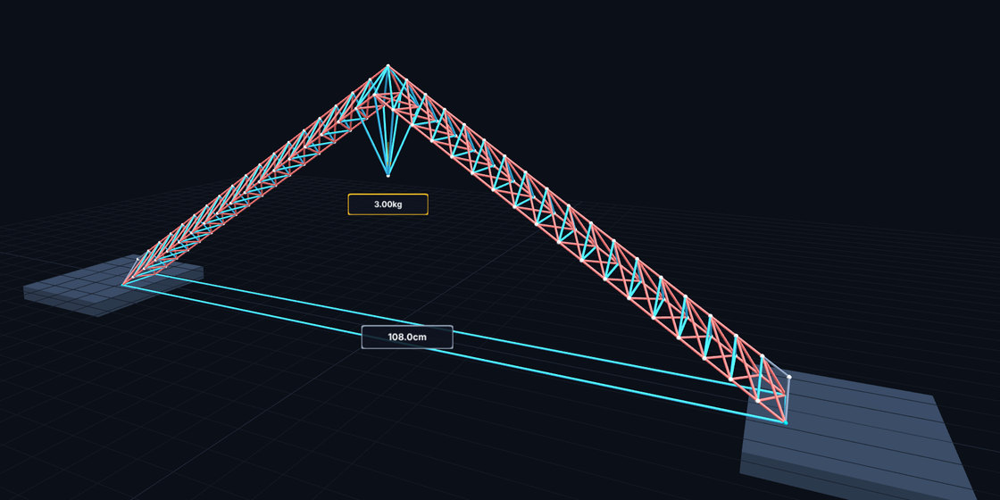
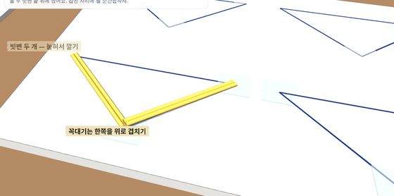
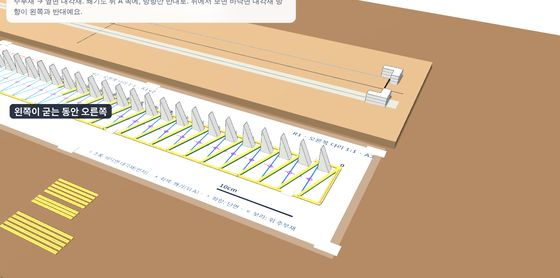
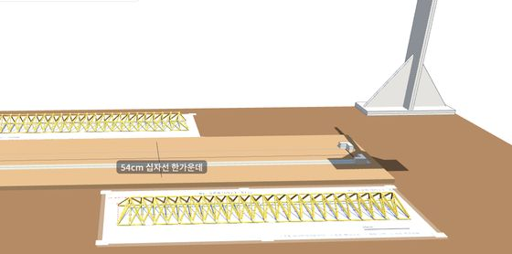
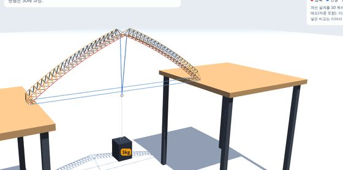
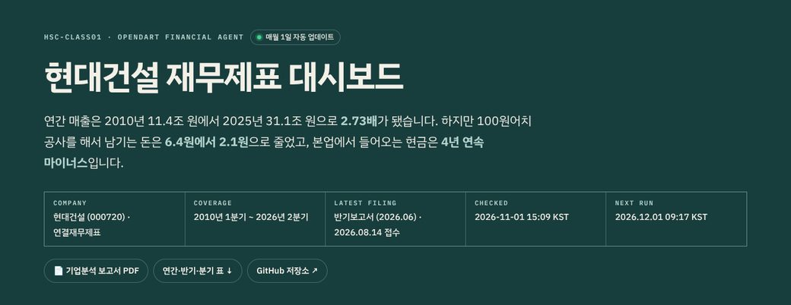

국가기술자격
토목산업기사
- 01 필기합격
- 02 실기응시 완료
- 03 최종 발표2026.12.18
Civil Engineering · Portfolio 2026
토목산업기사 필기 합격
실기 최종 발표 2026.12.18 · AI 윤리 수료(Coursera)
Qualification
국가기술자격
수료
Global MOOC on the Ethics of AI
UNESCO × LG AI Research · Coursera
2026.08.31 수료
Work

설계처음 3D 모델 · 부재 335개 · 빨강 압축, 파랑 인장
구조 설계 → 시공 계획
AI가 준 3D 설계에서 멈추지 않고, Claude와 함께 설계를 다시 검토해 고친 뒤 실제로 만드는 순서를 18단계 3D 시뮬레이션으로 짰습니다.

11 삼각 단면
13 다리 조립
14 세우기
18 재하 시험시공 계획Claude와 함께 짠 18단계 시뮬레이션 중 네 장면
보고서를 따라 정리한 판단 순서
안전진단 × 기술보고서
방대한 정밀안전진단 보고서를 AI와 함께 읽고, 수치·사진·시험·구조해석 결과가 다음 판단으로 어떻게 이어지는지 하나의 흐름으로 다시 짰습니다.
유지관리 현장에서 진단 보고서를 읽고 다음 할 일을 정하는 순서를 익혔습니다.

사업 분석 × 데이터 자동화
OpenDART 공시를 자동으로 모아, 건설사가 원가·수주·현금으로 돈을 버는 구조를 분석했습니다. 프로그램이 원문에서 읽은 숫자는 공시 API 값과 대조해 확인했습니다.